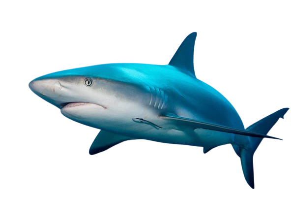

Tiburón Gris

| Índice: |
| -Descripción |
| -Reproducción |
| -Alimentación |
| -Comportamiento |
| -Distribución y Hábitat |
| -CaracterÍsticas de su mordida |
| -Tiburón Gris mini documental |
Descripción
El tiburón gris (Carcharhinus amblyrhynchos) es una especie de elasmobranquio carcarriniforme de la familia Carcharhinidae.Generalmente se encuentran a 250 metros de profundidad.
Tal y como su nombre sugiere, su color es mayoritariamente gris, con un superficie inferior blanca. Las extremidades de la mayorÍa de las aletas, excepto las primeras aleta dorsal, son más oscuras, y la aleta caudal tiene un margen negro prominente. Algunos individuos tienen un patrón blanco en el borde principal de laguna aleta dorsal. Los más grandes llegan a medir 2,55 m. Puede confundirse fácilmente con el tiburón punta negra, con la diferencia de que éste tiene la primera aleta dorsal negra.y viven en mares oscuros.
Reproducción
Durante el apareamiento, el macho de tiburón gris de arrecife muerde el cuerpo o las aletas de la hembra para asegurar la cópula. Como otros tiburones réquiem, esta especie es vivÍpara; una vez que los embriones en desarrollo consumen su reserva de yema, el saco vitelino se transforma en una conexión placentaria que los nutre hasta el momento del nacimiento. Cada hembra tiene un único ovario funcional en el lado derecho y dos úteros funcionales. La camada consiste tÍpicamente en uno a cuatro cachorros (seis en ocasiones en Hawái), y el número de crÍas aumenta con el tamaño de la hembra. El perÍodo de gestación varÍa entre 9 y 14 meses. Se estima que el parto ocurre de julio a agosto en el hemisferio sur y de marzo a julio en el hemisferio norte, aunque se han registrado hembras con "embriones a término" en otras épocas del año, como en la caÍda en Enewetak.
Los recién nacidos miden entre 45 y 60 cm (18 a 24 pulgadas) de longitud. La maduración sexual ocurre aproximadamente a los siete años de edad para los machos, alcanzando longitudes de 1,3 a 1,5 m (4,3 a 4,9 pies), mientras que las hembras maduran entre los 1,2 y 1,4 m (3,9 a 4,6 pies) de longitud. Las hembras de la Gran Barrera de Coral alcanzan la madurez sexual a los 11 años, más tarde que en otras regiones y con un tamaño ligeramente mayor. La longevidad mÍnima estimada es de 25 años, destacando la duración significativa de la vida de estos tiburones en su entorno marino.
Alimentación
Los tiburones grises de arrecife son depredadores especializados que se alimentan principalmente de peces óseos, con cefalópodos como calamares y pulpos constituyendo el segundo grupo alimenticio más importante, seguidos por crustáceos como cangrejos y langostas. Los individuos más grandes capturan una proporción mayor de cefalópodos en su dieta. Estos tiburones cazan tanto de manera individual como en grupos, utilizando estrategias como fijar bancos de peces contra las paredes exteriores de los arrecifes de coral para facilitar la captura.
Se ha documentado que forman grupos de caza impresionantes, como uno observado con hasta 700 tiburones grises de arrecife en el atolón de Fakarava en la Polinesia Francesa. Este comportamiento contrasta con el de los tiburones de arrecife punta blanca, que son más hábiles en capturar peces dentro de cuevas y grietas. Los tiburones grises poseen un sentido del olfato extremadamente agudo, capaz de detectar una parte de extracto de atún en 10 mil millones de partes de agua de mar.En presencia de abundante alimento, los tiburones grises de arrecife pueden entrar en un frenesÍ alimentario. Se ha registrado un caso donde un frenesÍ fue desencadenado por una explosión submarina que resultó en la muerte de varios pargos; durante este evento, uno de los tiburones fue atacado y consumido por sus congéneres. Estos comportamientos subrayan la eficiencia y adaptabilidad de los tiburones grises de arrecife como depredadores clave en los ecosistemas de arrecifes coralinos.
Comportamiento
Son activos durante el dÍa, pero más durante la noche, alimentándose de cefalópodos como calamares, pulpo, y varios crustáceos como cangrejos y camarón.
Son una especie social, que generalmente se agrupan donde hay corrientes fuertes. Son a menudo curiosos y les gusta investigar y zambullirse o bucear. Aunque han estado implicados en ataques a personas, se cree que ha sido debido a la percepción de peligro por los bañistas. Cuando se sienten amenazados se les puedes reconocer por la forma de "S" que adapta su cuerpo.Normalmente una madre suele tener entre 1 y 6 tiburones cada vez que se reproduce.Normalmente una madre suele tener entre 1 y 6 tiburones cada vez que se reproduce.
Distribución
Se distribuye ampliamente en las aguas tropicales de los océanos Índico y Pacífico, abarcando desde Madagascar y el mar Rojo hasta el sur de China, el norte de Australia y diversas islas oceánicas como Hawái y la Polinesia Francesa.
Hábitat
Es una especie predominantemente costera e insular que habita en arrecifes de coral, lagunas y pendientes arrecifales externas desde la superficie hasta profundidades de unos 280 metros, aunque suele mantenerse por encima de los 60 metros.
Distribución y Hábitat
El tiburón gris de arrecife tiene una distribución amplia que abarca los océanos Índico y PacÍfico. En el Índico, se encuentra desde Sudáfrica hasta la India, incluyendo Madagascar, el Mar Rojo y las Maldivas. En el PacÍfico, su rango se extiende desde el sur de China hasta el norte de Australia y Nueva Zelanda, incluyendo el Golfo de Tailandia, Filipinas e Indonesia. Además, se ha reportado en numerosas islas del PacÍfico, como Samoa Americana, el archipiélago de Chagos, la isla de Pascua, la isla de Navidad, las islas Cook, las islas Marquesas, entre otras.
Este tiburón generalmente se encuentra en aguas costeras poco profundas, preferentemente a profundidades menores de 60 metros (200 pies). Sin embargo, se ha registrado que pueden descender hasta 1000 metros (3300 pies). Su hábitat predilecto incluye plataformas continentales e insulares, con una preferencia por los lados de sotavento de los arrecifes de coral, donde el agua es clara y la topografÍa es accidentada. Suelen habitar cerca de los desniveles en los bordes exteriores de los arrecifes, especialmente cerca de los canales del arrecife con fuertes corrientes, aunque ocasionalmente pueden aventurarse varios kilómetros mar adentro.
CaracterÍsticas de su mordida
 |
Cada mandÍbula cuenta con 13 o 14 dientes, siendo usualmente 14 en la superior y 13 en la inferior. Los dientes superiores son triangulares con cúspides inclinadas, mientras que los inferiores tienen cúspides más estrechas y erectas, siendo más grandes en la mandÍbula superior. |